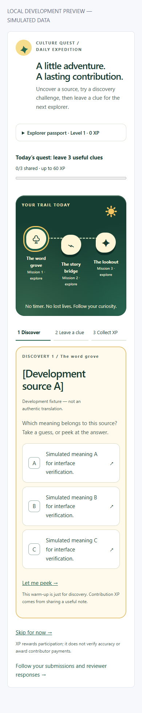
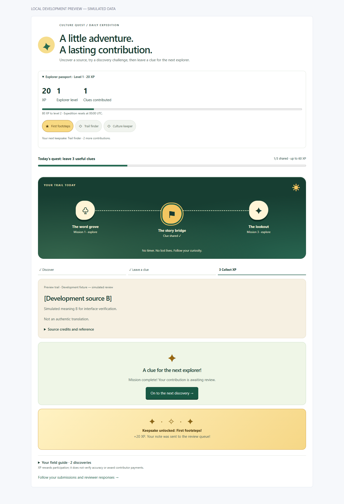

Indigen World Labs has a new contribution experiment in the repository: Culture Quest. It turns a few minutes of sharing knowledge into a daily expedition.

Your expedition has three stops: the word grove, the story bridge and the lookout. Tap a stop to uncover a source. A short discovery challenge asks you to match its meaning using reviewed source text. Guess freely or peek: there are no timers or lost lives, and an incorrect guess simply reveals the reviewed meaning.
The story bridge flips the challenge: start with a meaning and find its source. Reviewed recordings can provide a listening clue when available. A daily goal and three simple steps help you see what comes next. Your field guide collects the sources you discover, and unfinished notes stay with their stop as you move around the trail.
Sign in with your Indigen World account and open Culture Quest from Labs’ experiments. Each UTC day offers up to three cards from the eligible reviewed archive sample. Read a source, then add a usage or cultural context note, or propose a correction. Include the context or evidence that helps a reviewer understand your contribution.
If you do not know the answer, skip the card. Share only knowledge you have permission to share, and leave private or restricted material out.
Need an idea for your clue? Choose a prompt about when you would use the source, how you learned it, or what a visitor should know. Prompts guide your own writing; they do not invent contributions for you. A readiness hint checks that you have added a note and supporting context before sending it for review.
Each submitted mission earns 20 game XP. Every 100 XP advances a level. Your first contribution earns First footsteps; three earn Trail finder; ten earn Culture keeper. Celebrations mark new keepsakes and explorer levels, and the trail invites you to the next discovery. Progress is saved to your account. Daily mission completion resets at midnight UTC while your total XP and contributions remain. Discovery guesses are a playful warm-up and do not earn XP.

Your note enters Labs’ existing review queue. Follow its status and the team’s response under My activity, in Feedback. Source references stay attached so reviewers know what you mean. A submission does not automatically alter a dictionary entry or publish new cultural knowledge.
XP recognises participation. It is separate from verified contributor points, payments and language expertise. Skipping earns no XP, and repeating the same source submission that day earns no extra reward.
This signed-in alpha was deployed on October 1, 2026. The public route and served release asset were verified; signed-in gameplay and review still await production verification. The website build, backend build and existing policy checks passed. Local desktop and mobile interface checks used simulated callable responses. The new emulator integration tests are prepared but could not run on this machine because Java is missing.
The game depends on eligible reviewed sources in a bounded archive sample. Some days may have fewer than three cards, or no cards. Labs administrators can pause the experiment or limit it to invited testers. Chinedum will share confirmed availability after release.